我们介绍 MiniMax-M1，这是全球首个开放权重的大规模混合 attention 推理模型。MiniMax-M1 采用结合 lightning attention 机制的混合 MoE（混合专家）架构。该模型基于我们之前的 MiniMax-Text-01 模型（MiniMax et al., 2025）开发，总参数量为 4560 亿，每个 token 激活 459 亿参数。M1 模型原生支持 100 万 token 的上下文长度，是 DeepSeek R1 上下文大小的 8 倍。此外，MiniMax-M1 中的 lightning attention 机制能够高效扩展测试时计算——例如，在生成长度为 100K token 时，M1 消耗的 FLOPs 仅为 DeepSeek R1 的 25%。这些特性使 M1 尤其适合需要处理长输入并进行大量思考的复杂任务。MiniMax-M1 使用大规模强化学习（RL）训练，问题类型丰富，从传统数学推理到基于沙箱的真实软件工程环境均有覆盖。除 lightning attention 对 RL 训练固有的效率优势之外，我们还提出了新的 RL 算法 CISPO，以进一步提高 RL 效率。CISPO 裁剪重要性采样权重，而不是裁剪 token 更新，其效果优于其他有竞争力的 RL 变体。结合混合 attention 和 CISPO，我们在 512 张 H800 GPU 上仅用三周就完成了 MiniMax-M1 的全部 RL 训练，租赁成本仅为 534,700 美元。我们发布了两种 MiniMax-M1 模型，其思考预算分别为 40K 和 80K，其中 40K 模型对应 80K 训练的一个中间阶段。在标准基准上的实验表明，我们的模型与原始 DeepSeek-R1 和 Qwen3-235B 等强大的开放权重模型相当或更优，在复杂软件工程、工具使用和长上下文任务上尤其突出。通过高效扩展测试时计算，MiniMax-M1 为下一代语言模型 agent 进行推理和应对现实挑战提供了强大的基础。我们在 https://github.com/MiniMax-AI/MiniMax-M1 公开发布 MiniMax-M1。
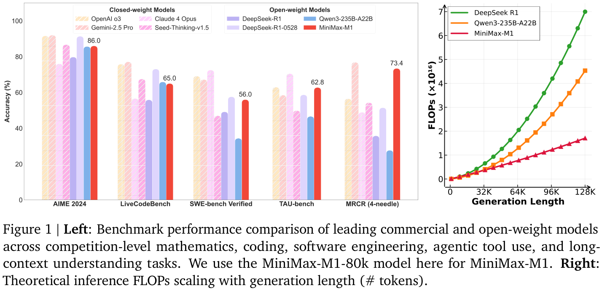
1请将通信发送至 model@minimax.io。
© 2025 MiniMax。保留所有权利。
OpenAI o1（OpenAI, 2024a）和 DeepSeek-R1（DeepSeek-AI et al., 2025）等大型推理模型（LRM）通过大规模强化学习（RL）延长推理过程，取得了显著成功。近几个月，开源社区和商业机构都沿着这一趋势发展，在奥林匹克数学竞赛和竞赛编程等复杂任务上取得了重大进展（Anthropic, 2025; Google DeepMind, 2025; Hu et al., 2025; Kimi Team, 2025; Seed et al., 2025; Yu et al., 2025; Zeng et al., 2025）。LRM 的成功主要归功于测试时计算这一新的扩展维度——生成过程中投入更多 FLOPs 以延长推理过程，模型性能便持续提升，尤其是在复杂的现实应用中（Jimenez et al., 2024; OpenAI, 2025）。
然而，由于 softmax attention 机制固有的二次计算复杂度，在传统 transformer 架构（Vaswani et al., 2017）中持续延长推理过程十分困难。尽管已有工作提出了多种缓解这一问题的技术——例如稀疏 attention（Beltagy et al., 2020; Lu et al., 2025; Yuan et al., 2025; Zaheer et al., 2020）、线性 attention（Arora et al., 2024; Choromanski et al., 2021; Du et al., 2025; He et al., 2024; Katharopoulos et al., 2020; Peng et al., 2024b, 2021; Qin et al., 2021, 2022a,b, 2024a,c; Shen et al., 2024; Sun et al., 2025, 2023; Zhang et al., 2024）、带 delta 衰减的线性 attention（Peng et al., 2025; Yang et al., 2024a,b）、状态空间模型（Dao and Gu, 2024; Glorioso et al., 2024; Gu and Dao, 2024; Gu et al., 2020, 2022, 2023; Gupta et al., 2022; Jamba Team, 2024; Ren et al., 2024）以及线性 RNN（Behrouz et al., 2024; Chou et al., 2024; Chung and Ç, 2014; Hochreiter and Schmidhuber, 1997; Martin and Cundy, 2018; Peng et al., 2023, 2024a; Qin et al., 2023, 2024d; Siems et al., 2025; Sun et al., 2024; von Oswald et al., 2025）——这些方法尚未在大规模推理模型中得到充分验证，迄今几乎所有有竞争力的 LRM 仍依赖传统 attention 设计。一个例外是采用 Mamba 架构（Dao and Gu, 2024; Gu and Dao, 2024）的 Hunyuan-T1 模型（Tencent AI Lab, 2025）。然而，该模型并未开源，披露的细节也很少。本工作旨在构建并开源一个能够高效扩展测试时计算、并与最先进推理模型竞争的大型推理模型。
我们介绍 MiniMax-M1，这是一个采用混合 MoE（混合专家）架构和 Lightning Attention（Qin et al., 2024b）的推理模型，后者是线性 attention 变体（Qin et al., 2022a）的一种 I/O 感知实现。MiniMax-M1 基于此前的 MiniMax-Text-01（MiniMax et al., 2025）模型开发，总参数量为 4560 亿，激活参数量为 459 亿，具有 32 个专家。在我们的 attention 设计中，每七个采用 lightning attention 的 transnormer 块（Qin et al., 2022a）之后，就接一个采用 softmax attention 的 transformer 块。如图 1 右图所示，这一设计在理论上能够高效地将推理长度扩展至数十万 token。例如，生成长度为 64K token 时，M1 消耗的 FLOPs 不到 DeepSeek R1 的 50%；长度为 100K token 时，这一比例约为 25%。计算成本的大幅降低使 M1 在推理和大规模 RL 训练期间都明显更加高效。此外，得益于 lightning attention 机制，并与 MiniMax-Text-01 保持一致，M1 原生支持最长 100 万 token 的上下文——是 DeepSeek R1 上下文大小的八倍，也比迄今所有开放权重 LRM 高出一个数量级。这些特性使 M1 尤其适合需要处理长输入并生成长篇思考的复杂现实任务。表 1 对比了 M1 与其他领先模型的最大输入和输出长度。
为开发 M1 模型，我们首先使用精心整理、推理密集的语料，对 MiniMax-Text-01 继续预训练了 7.5T token。随后，我们进行 SFT（接下页）。
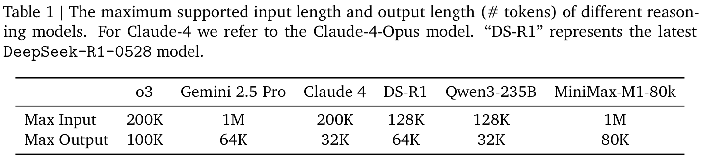
（接上页）以注入特定的 chain-of-thought（CoT）模式（Wei et al., 2022），为 M1 开发的核心阶段——强化学习——奠定坚实基础。值得注意的是，我们通过两个关键方面的创新实现了高效的 M1 RL 扩展：（1）提出新的 RL 算法 CISPO，它放弃信赖域约束，转而裁剪重要性采样权重以稳定训练。该方法始终利用所有 token 计算 gradient，实验显示其效率优于 GRPO（Shao et al., 2024）和 DAPO（Yu et al., 2025）——例如，在基于 Qwen2.5-32B 模型（Qwen et al., 2025）的受控研究中，CISPO 相比 DAPO 实现了 2 倍加速；（2）虽然 M1 的混合 attention 设计天然支持高效 RL 扩展，但使用这一架构扩展 RL 时会出现独特挑战。例如，我们发现该架构训练 kernel 和推理 kernel 之间存在精度不匹配，导致 RL 训练期间奖励无法增长。我们开发了针对性的解决方案应对这些挑战，成功地在这一混合架构上扩展 RL。最终，高效的 RL 框架使我们使用 512 张 H800 GPU，在三周内完成了 MiniMax-M1 的一次完整 RL 训练，相当于约 53 万美元的租赁成本。
除方法创新之外，我们还为 RL 训练整理了多样化的问题和环境。我们的数据同时涵盖可验证和不可验证的问题。对于通常被认为对推理学习至关重要的可验证问题，我们不仅纳入相关工作常用的数学推理与竞赛编程问题，还利用之前的数据合成框架 SynLogic（Liu et al., 2025a），生成横跨 41 种不同任务的多样化逻辑推理问题。此外，我们为来自 SWE-bench（Jimenez et al., 2024）的复杂软件工程（SE）环境构建沙箱，并在真实 SE 问题上使用基于执行的奖励开展 RL，以提升 M1 在具有挑战性的 SE 场景中的性能。不可验证的问题涵盖问答、创意写作等广泛领域，我们使用生成式奖励模型提供反馈。
我们训练了两种 MiniMax-M1，其最大生成长度分别为 40K 和 80K token，由此得到 MiniMax-M1-40k 和 MiniMax-M1-80k。在复杂数学和编程任务上，MiniMax-M1-80k 优于 MiniMax-M1-40k，进一步展示了扩展测试时计算的益处。如图 1 左图所示，MiniMax-M1 总体上超越了原始 DeepSeek-R1 和 Qwen-235B 等此前领先的开放权重模型，在复杂软件工程、工具使用和长上下文任务上具有特别明显的优势。与最新的 DeepSeek-R1-0528 相比，MiniMax-M1 在数学和编程竞赛上有所落后，但在更贴近现实的工具使用和长上下文场景中取得相当或更优的性能。值得注意的是，MiniMax-M1 在 agent 工具使用基准 TAU-Bench（Yao et al., 2025）上优于 Gemini 2.5 Pro，在长上下文理解基准上超过 OpenAI o3 和 Claude 4 Opus。凭借高效的 test-time scaling，我们认为 MiniMax-M1 为下一代语言模型 agent 应对现实挑战奠定了坚实基础。
为促进领域内的合作与进步，我们已在 GitHub 和 Hugging Face 公开提供模型。vLLM 和 Transformers 框架现已支持这些模型，详细的部署指南分别见 vLLM 与 Transformers。这（接下页）。
原文链接：https://github.com/MiniMax-AI/MiniMax-M1/blob/main/docs/transformers_deployment_guide.md · https://github.com/MiniMax-AI/MiniMax-M1/blob/main/docs/vllm_deployment_guide.md
（接上页）使 MiniMax-M1 能够轻松集成到现代推理流水线中。我们也在 minimax.io 提供商业标准 API。
本工作重点通过扩展强化学习来增强 Minimax-Text-01 的推理能力。为实现可扩展的 RL 训练，我们首先对基础模型进行持续预训练，强化其内在推理能力。随后进行冷启动 SFT 阶段，向模型注入特定推理模式，从而为后续 RL 阶段提供更强大的基础。
为增强基础模型的推理和长上下文能力，同时确保多样性，我们优化了数据质量与配比，使用额外的 7.5T token 继续训练 MiniMax-Text-01。
训练数据。我们改进预训练的 Web 和 PDF 解析机制，并增强启发式清洗规则，确保数学和代码相关数据具有较高召回率。我们优先从网页、论坛和教科书等多样化来源提取自然形成的问答（QA）对，严格避免使用合成数据。此外，我们对 QA 数据进行语义去重，以保持其多样性与独特性。我们还将 STEM（科学、技术、工程和数学）、代码、书籍与推理相关数据的比例提高至 70%。这显著增强了基础模型处理复杂任务的能力，同时没有损害其他通用能力。
训练配方。我们降低 MoE 辅助损失的系数，并调整并行训练策略以支持更大的训练 micro-batch 大小，从而减轻辅助损失对模型整体性能的不利影响。在 MiniMax-Text-01 的基础上，我们先以 8e-5 的恒定学习率继续训练 2.5T token，再在 5T token 的训练过程中将学习率衰减至 8e-6。
长上下文扩展。对于收敛复杂度更高的混合 lightning 架构模型，我们观察到，过于激进地扩展训练长度可能在训练期间引发突然的 gradient 爆炸。这使优化过程极为困难。我们将其归因于前面层的参数优化无法跟上后面层的变化——对于 lightning attention，前面层和后面层的衰减率不同，使前面层更关注局部信息。我们采用更加平滑的上下文长度扩展来缓解此问题，将过程分为四个阶段，从 32K 上下文窗口开始，最终将训练上下文扩展至 1M token。
持续预训练后，我们通过高质量示例开展 SFT，以赋予模型基于反思的 CoT 推理等期望行为，为下一阶段更高效、更稳定的 RL 建立良好起点。具体来说，我们整理了具有长 CoT 回答的数据样本。这些样本涵盖数学、编程、STEM、写作、问答和多轮聊天等多个领域。数学和编程样本约占全部数据的 60%。
如图 1 右图所示，M1 架构在推理时表现出明确的效率优势。这自然有利于在生成越来越长的回答时高效扩展 RL。然而，作为使用这一混合架构扩展 RL 的先行者，我们在过程中遇到了独特的挑战，各种问题可能使 RL 过程不稳定甚至失败。为应对这些困难，我们开发了针对性的解决方案，成功扩展了 M1 的 RL 训练。此外，我们提出了新的 RL 算法，相比现有方法具有更高的 RL 效率。这两方面的贡献共同构成了训练 M1 所用的高效、可扩展 RL 框架，使用 512 张 H800 GPU 完成完整训练周期需三周，相当于约 53 万美元的租赁成本。本节先介绍 RL 的一般背景及新的 RL 算法，再描述混合架构带来的具体挑战以及我们的解决方案。
背景。对于数据集 \(\mathcal D\) 中的问题 \(q\)，我们将由 \(\theta\) 参数化的策略模型记为 \(\pi\)，策略生成的回答记为 \(o\)。PPO（Schulman et al., 2017）采用以下目标优化策略，以最大化预期回报，并使用裁剪操作稳定训练：
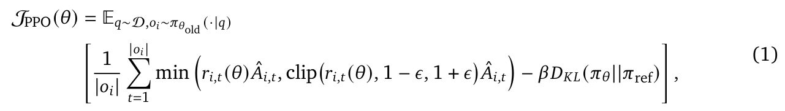
其中，\(r_{i,t}(\theta)=\frac{\pi_\theta(o_{i,t}\mid q,o_{i,<t})}{\pi_{\theta_{\mathrm{old}}}(o_{i,t}\mid q,o_{i,<t})}\) 是重要性采样（IS）权重，用于修正 off-policy 更新中的分布，因为我们使用 \(\pi_{\theta_{\mathrm{old}}}\) 收集轨迹，并以 mini-batch 方式通过多个步骤更新策略。PPO 需要单独的价值模型来计算优势 \(\hat A_{i,t}\)，而 GRPO（Shao et al., 2024）移除了价值模型，并将优势定义为相对于组内其他回答的输出奖励：
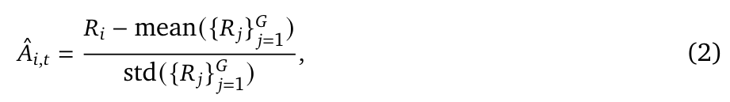
其中，\(R_i\) 是回答的奖励，每个问题采样 \(G\) 个回答 \(\{o_i\}_{i=1}^G\)。奖励来自规则验证器（例如数学解题任务）或奖励模型。
token 裁剪的问题。在使用混合架构进行 zero-RL 的初始实验中，我们观察到 GRPO 算法对训练性能产生不利影响，不能有效促进长 CoT 推理行为的涌现。通过一系列受控消融研究，我们最终确定，原始 PPO/GRPO 损失中不理想的裁剪操作是学习性能下降的主要原因。具体来说，我们发现与反思行为相关的 token（例如 However、Recheck、Wait、Aha）通常较为罕见，基础模型赋予它们的概率较低，而它们往往是推理路径中的“分叉点”。策略更新期间，这些 token 容易出现较大的 \(r_{i,t}\) 值。因此，它们在首次 on-policy 更新后便被裁剪掉，无法对后续 off-policy gradient 更新作出贡献。在我们的混合架构模型中，这一问题尤为突出，并进一步阻碍了强化学习的扩展。然而，这些低概率 token（接下页）。
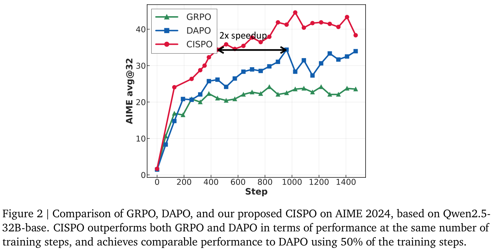
（接上页）往往对稳定熵（Cui et al., 2025）与实现可扩展 RL（Wang et al., 2025）至关重要。虽然 DAPO 尝试通过提高裁剪上界来缓解这一问题（Yu et al., 2025），我们发现在自己的设置中——每个生成 batch 进行 16 轮 off-policy 更新——这种方法效果有限。
CISPO 算法。对此，我们提出了新的算法，它明确避免丢弃 token，即使这些 token 对应较大的更新，同时内在地将熵保持在合理范围内，以确保稳定探索。首先回顾一下，针对离线更新进行了分布修正的原始 REINFORCE 目标为：
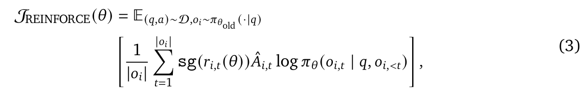
其中，\(\operatorname{sg}(\cdot)\) 表示停止 gradient 的操作。我们没有像 PPO/GRPO 那样裁剪 token 更新，而是裁剪式 3 中的重要性采样权重来稳定训练。我们将此方法称为 CISPO（Clipped IS-weight Policy Optimization，裁剪 IS 权重的策略优化）。采用 GRPO 的组相对优势与 token 级损失（Liu et al., 2025b; Yu et al., 2025），CISPO 优化以下目标：
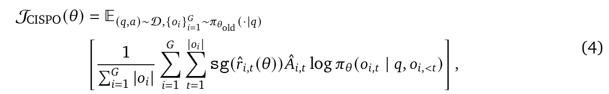
其中，\(\hat r_{i,t}(\theta)\) 是裁剪后的 IS 权重：
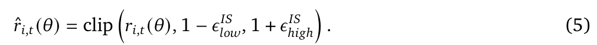
需要说明的是，不裁剪权重时，\(J_{\mathrm{CISPO}}\) 就退化为标准策略 gradient 目标。实验中，我们将 \(\epsilon^{IS}_{low}\) 设为较大值，从而不为 IS 权重设置下界；（接下页）。
（接上页）只调节 \(\epsilon^{IS}_{high}\)。虽然权重裁剪使式 4 的 gradient 略有偏差，但此方法保留了所有 token 的 gradient 贡献，尤其适用于长回答。CISPO 在实验中表现有效，有助于降低方差并稳定 RL 训练。此外，我们使用了 Yu et al.（2025）的动态采样与长度惩罚技术。与其他近期工作（Hu et al., 2025; Yu et al., 2025）类似，CISPO 中没有 KL 惩罚项。
一般化表述。虽然实验采用 CISPO，我们在此进一步通过在 CISPO 目标中引入逐 token 掩码，给出统一表述。这使我们能够调节超参数，控制是否丢弃特定 token 的 gradient，以及在什么条件下丢弃：
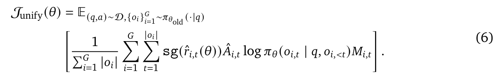
掩码 \(M_{i,t}\) 等价于 PPO 信赖域中隐式定义的掩码：
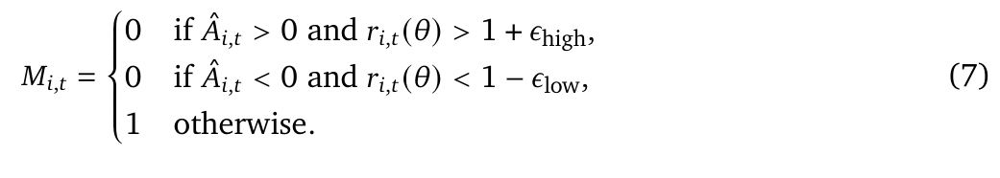
这一统一损失表述能够在共同框架下灵活表示不同的裁剪策略。
CISPO 的实验验证。为验证 CISPO 的有效性，我们在 zero-RL 训练设置中将其与 DAPO 和 GRPO 进行实验比较。具体来说，我们采用不同的 RL 算法，在 Yu et al.（2025）的数学推理数据集上训练 Qwen2.5-32B-base，并报告 AIME 2024 基准上的性能。如图 2 所示，在相同训练步数下，CISPO 显著优于 DAPO 和 GRPO。值得注意的是，CISPO 相比其他方法具有更高的训练效率；例如，仅用 50% 的训练步数即可达到 DAPO 的性能。
如图 1 右图所示，我们强调，相比传统 attention 设计，混合 attention 天然支持更加高效的 RL 扩展，因为 rollout 的计算与延迟通常是 RL 训练的主要瓶颈。然而，作为在这一新架构上开展大规模 RL 实验的先行者，我们遇到了独特挑战，并开发了针对性的解决方案，下面予以说明。
生成与训练中的计算精度不匹配。RL 训练对计算精度高度敏感。RL 训练期间，我们观察到训练模式和推理模式对 rollout token 给出的概率存在显著差异，如图 3 左图所示。这一差异源自训练 kernel 与推理 kernel 之间的精度不匹配。该问题危害很大，阻止了实验中的奖励增长。有趣的是，在使用 softmax attention 的较小稠密模型中，这一问题并未出现。通过逐层分析，我们确定输出层 LM head 中的高幅值激活是误差的主要来源。为解决此问题，我们将 LM 输出 head 的精度提高到 FP32，从而使理论上相同的两种概率重新对齐，如图 3 右图所示。这一调整将训练与推理概率之间的相关性从约 0.9x 提升至（接下页）。
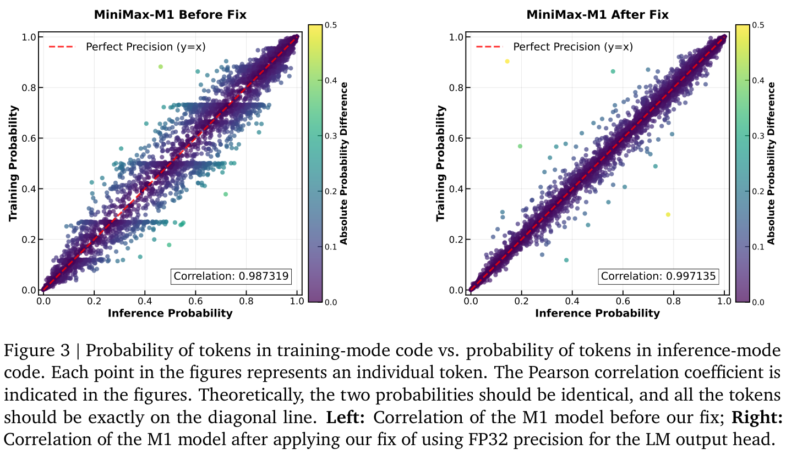
（接上页）0.99x。值得注意的是，这一相关性指标在整个训练过程中保持稳定，使奖励能够成功增长。
对优化器超参数的敏感性。我们采用 AdamW 优化器（Loshchilov and Hutter, 2019），\(\beta_1\)、\(\beta_2\) 和 \(\epsilon\) 配置不当可能导致训练不收敛（Molybog et al., 2023）。例如，使用 VeRL（Sheng et al., 2024）的默认配置，即 betas = (0.9, 0.999) 和 eps = 1e-8，就可能出现此类问题。我们观察到 MiniMax-M1 训练中的 gradient 幅值范围很广，从 1e-18 到 1e-5，且大多数 gradient 小于 1e-14。此外，相邻迭代 gradient 的相关性较弱。据此，我们设定 \(\beta_1=0.9\)、\(\beta_2=0.95\)，并使用 eps=1e-15。
通过重复检测提前截断。RL 训练期间，我们发现复杂提示可能诱发异常漫长且重复的回答，其巨大 gradient 会威胁模型稳定性。我们的目标是提前终止这些生成循环，而不是惩罚已经重复的文本。由于简单的字符串匹配不能有效应对多样化的重复模式，我们开发了基于 token 概率的启发式方法。我们观察到，模型一旦进入重复循环，每个 token 的概率都会飙升。因此，我们实现了提前截断规则：如果连续 3,000 个 token 各自的概率都高于 0.99，则停止生成。该方法通过消除这些异常的长尾案例，成功避免了模型不稳定，并提高了生成吞吐量。
本节描述 RL 阶段采用的数据和奖励。我们在 RL 训练流水线中纳入了多种环境，包括可通过规则验证的任务，以及需要通过奖励模型验证的通用任务。所有这些环境都通过精心设计的课程安排整合到 RL 阶段中。
下面介绍可由确定性规则验证的数据。对于以下所有任务，我们使用基于规则的最终正确性作为正确性奖励，并辅以格式奖励。
数学推理。最初的数学数据集包含数十万道高质量竞赛级问题，均从公开来源与官方数学竞赛中精心整理。问题覆盖广泛难度，每道问题都配有标准参考解答。数据清洗流水线首先移除不完整样本及存在格式或排印错误的样本。随后，我们在不同 RL 数据源之间进行基于 embedding 的去重，并严格将其与 SFT 数据集分离，避免任何重叠，因为从 SFT 阶段泄漏到 RL 阶段的数据会阻碍探索、削弱训练效果。此外，我们同时使用 n-gram 与基于 embedding 的方法，消除常用数学基准测试集可能带来的污染，确保评估的完整性与公平性。我们过滤包含多个子问题的样本、证明题，以及容易通过随机猜测作答的二元问题（例如判断对错）。选择题被改写为开放式格式，以更好地匹配强化学习框架。接着，我们使用内部模型从参考解答中提取最终答案，只保留提取出的答案可被规则答案检查器正确解析的样本。最后，使用强推理模型计算各问题的 pass@10，仅保留通过率严格介于 0 和 0.9 之间的样本，最终得到近 50K 条高质量数学样本用于 RL 训练。
逻辑推理。对于逻辑推理数据，我们精心选择了密码和数独等 41 种需要非平凡推理能力的逻辑任务，并实现数据合成框架，合成全部数据。具体来说，我们利用 SynLogic 框架（Liu et al., 2025a）实现数据合成流水线，其中包含针对具体任务的数据生成器与基于规则的任务验证器，从而自动生成逻辑数据。我们细致配置生成过程中的难度参数，确保生成数据具有适当的学习挑战。为避免纳入过难样本，我们根据当前强推理模型的求解极限设定难度上界，要求它们的 pass@10 大于零。同样，我们采用 MiniMax-Text-01 通过率介于 0 和 0.5 之间时的最低难度参数，设定难度下界。这种方法保证了数据在难度和可学习性之间的平衡。此外，随着训练中模型能力的提升，我们在后期提高数据难度。使用该框架，我们合成了约 53K 条逻辑推理样本用于 RL 训练。
竞赛编程。我们从在线评测平台和热门编程网站收集公开的竞赛编程问题。对于缺少测试用例的问题，我们开发基于 LLM 的工作流，使用 MiniMax-Text-01 生成全面的测试套件。与数学推理数据集的方法类似，我们利用模型采样的通过率，按质量和难度过滤问题，保留难度适中且高质量的算法问题。通过这一过程，我们生成了 30K 条竞赛编程数据用于 RL 训练。
软件工程。对于软件工程领域，我们受到 SWE-bench（Jimenez et al., 2024）的启发，利用公开 GitHub 仓库中的真实数据构建可验证的强化学习环境。数据集主要包含 issue 和 pull request（PR），涵盖常见的软件开发挑战，包括 bug 定位、代码修复与测试用例合成。为促进有效的强化学习，我们开发了复杂的容器化沙箱环境，模拟真实的软件开发工作流。这一（接下页）。
（接上页）环境支持实际执行代码，直接提供可验证的反馈，以判断 agent 提议的修改是否正确且有效。预定义或新生成测试用例的通过/失败状态，是 RL 框架的主要奖励信号。成功执行并通过全部相关测试用例会得到正奖励；编译错误、运行时失败或测试用例回归，则会得到零或负奖励，从而为策略优化提供明确信号。通过该过程，我们整理了数千条高质量数据样本。每个样本包括问题描述（例如 issue 中的 bug 报告）、最初存在错误的代码，以及一组关联测试用例。这一设置使 RL agent 能够学习准确定位 bug、提出正确的代码修复，甚至合成新的有效测试用例，其性能可通过沙箱环境中的执行直接验证。
本节进一步将 RL 范围扩展到更广泛的通用领域任务。由于这些任务难以通过规则验证，我们使用奖励模型提供反馈。
通用 RL 数据集共有 25K 条复杂样本，可大致分为两类：具有标准答案、可验证但难以通过规则验证的样本，以及没有标准答案的样本。
有标准答案的任务。这一类别主要包括 STEM 和其他事实性问题，其答案客观，但可能有多种有效表达。这种多样性往往使规则答案检查器不准确。数据清洗过程与数学推理相似，但我们使用生成式奖励模型（GenRM）作为验证器，而不依赖规则检查器。为评估标准答案与模型回答的一致性，我们采用五级奖励量表评估这两部分。首先，构建人工标注的奖励模型基准，涵盖多个知识和任务领域的客观任务，尤其纳入规则检查器无法准确判断的“模型回答—标准答案”对。其次，在多个基准上，将 GenRM 选出的 Best-of-N（BoN）回答与 pass@N 指标比较，评估 GenRM 的有效性。GenRM 的性能根据其在人工标注基准上的准确率，以及 BoN 与 pass@N 之间的性能差距进行评估。这些指标指导实验，以优化 GenRM 训练中的数据分布和提示设计。
无标准答案的任务。这一类别包含更广泛的任务，如指令遵循、创意写作等。提示根据内部标签系统从庞大的候选池中采样，确保各细粒度领域的训练分布平衡。虽然这些查询通常是开放式的，没有标准答案，但我们仍尝试为每个查询配一个参考答案，作为奖励模型判断的参照。为此，我们先使用多种内部与外部模型生成回答，再对这些参考答案进行内部质量评估。RL 训练期间，采用成对比较框架评估模型回答。每次比较给出 -1、0 或 1 分，分别表示模型输出比参考答案更差、相近或更好。尤其对于带约束的指令遵循任务，我们同时使用规则奖励判断回答是否满足约束，使用模型奖励评估回答质量。与有标准答案的设置相同，我们首先构建人工标注基准，纳入可靠标注者的多次盲测偏好判断。随后改进评分标准与偏好提示，优化准确率和潜在偏差，下文 §4.2.2 将讨论这些偏差。
为尽量降低潜在偏差，我们也通过多次盲测一致判断、交换位置后一致判断等多种方法优化训练数据。一旦训练出最优 GenRM，就在整个训练数据集上使用瑞士轮评分系统，确定最适合 RL 训练的参考答案。
复杂 CoT 推理任务中，有效的通用 RL 极其依赖准确且无偏的奖励模型。评估这种 CoT 回答颇具挑战。我们发现，GenRM 偏好更长的输出，而不论实际推理质量，甚至超过可能更优的简洁回答。这种长度偏差是一个严重问题，可能大幅误导 RL 策略优化，鼓励没有实质内容的冗长表达，并引发 reward hacking。我们最初采用标准离线策略提高 GenRM 的忠实程度：（1）通过涵盖广泛回答长度、来源与质量等级的数据，增加训练数据的多样性；（2）纳入对抗样本，暴露弱点；（3）改进模型架构。然而，实验分析显示，仅进行离线评估、提前缓解 GenRM 的长度偏差，往往无法防止 RL 训练期间出现长度偏差。
因此，我们的核心策略是在 RL 训练中持续在线监测长度偏差。我们设立具体指标，检测 RL 策略是否为了最大化 GenRM 奖励而不成比例地延长输出，却没有提高任务成功率或推理深度。一旦检测到这种有害的长度追求行为，表明模型正在利用 GenRM 的长度偏差，就立即触发 GenRM 重新校准。这种迭代调整对于提前防止与输出长度相关的 reward hacking 至关重要，确保策略优先提升实质能力，而不是表面地增加文字数量。除这一自适应方法之外，我们还系统地使用 RL 侧技术，包括奖励塑形、值裁剪和归一化。这些机制降低了奖励信号对表面特征（如长度）所带来极值的敏感性，从而使策略优化关注长 CoT 推理的实质质量与正确性。
由于 RL 数据覆盖广泛类别，一个核心挑战是训练单一策略，使其同时擅长推理密集型任务和通用领域任务。为此，我们在使用 CISPO 的 RL 训练中，对推理任务和通用领域任务采用精心管理的课程安排与动态加权策略：先仅使用具有规则奖励的推理密集型任务，再逐渐混入通用领域任务。这确保模型在持续改进可验证技能（例如数学与代码）的同时，逐步提升复杂指令遵循到开放式 CoT 推理等多样化通用任务上的表现。混合 RL 训练鼓励模型学习根据上下文运用推理能力：对可验证问题采用严谨的逐步演绎，对通用查询采用更加灵活、自适应的生成，全部在统一策略框架内完成。这既避免了专门技能的灾难性遗忘，又促进了更广泛的泛化。
首次 RL 训练采用 40K token 的输出长度限制。如图 1 右图所示，由于 M1 的混合架构原生支持更长序列的近线性扩展，我们进一步将 RL 训练期间的生成长度扩展至 80K token。由此得到的新模型称为 MiniMax-M1-80k。
数据。为高效训练输出长度为 80K 的 RL 模型，我们使用之前训练的 40K 模型指导数据过滤。首先，对 §4 所述整理后的数据集评估通过率，并移除容易解出的样本。随后调整数据分布，使其更偏向难度较高的样本，例如困难的数学与编程问题。此外，我们观察到合成推理数据会破坏长上下文 RL 训练的稳定性，因此降低其采样比例。具体来说，此类数据生成的输出往往变得重复且同质化，持续接触这些模式会损害模型整体性能。
长度扩展策略。为逐步增加输出长度，我们采用分阶段窗口扩展的 RL 策略。从 40K 输出长度开始，逐次扩展至 48K、56K、64K、72K，最终达到 80K。这种分阶段方法确保每一步的训练稳定性。是否进入下一个长度阶段由一组经验指标决定，包括生成序列困惑度是否收敛，以及输出长度的第 99 百分位数是否接近当前上下文窗口限制。这些信号有助于判断模型是否已准备好进行扩展，让我们在整个过程中维持稳健训练。
解决扩展期间的训练不稳定性。扩展过程中，在各长度窗口的训练后期，我们遇到一个关键问题。具体来说，模型容易出现模式崩溃，生成序列后半部分退化为不连贯或乱码文本。这一现象始终伴随困惑度升高，表明生成质量与稳定性受损。我们找到了根本原因：扩展输出长度时，负样本的长度增长明显快于正样本，往往更早达到上下文窗口限制。因此，在生成序列后半部分积累了比例过大的负 gradient。这种不平衡源于 GRPO 优势归一化与我们使用的 token 级损失之间固有的不均等性。为此，我们实施三个关键方案：（1）检测重复模式（连续高概率 token）并提前停止，避免重复回答过度消耗上下文窗口；（2）结合样本级损失和 token 级归一化，缓解正负样本不平衡及其不利影响；（3）同时降低 gradient 裁剪阈值和 \(\epsilon^{IS}_{high}\)，进一步稳定生成。
我们在多个关键领域对 MiniMax-M1 进行全面评估：数学、通用编程、软件工程、推理与知识、长上下文、agent 工具使用、事实性和通用助手能力。所有任务均采用 temperature 1.0 和 top-p 0.95 采样。
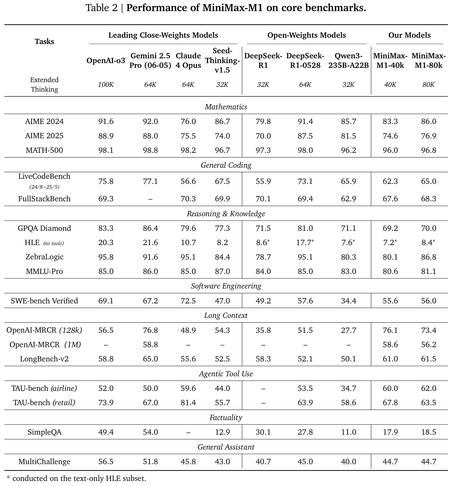
（接上页）使用 ZebraLogic（Lin et al., 2025）衡量逻辑推理能力。
（接上页）其上下文长度从 8k 到 2M 个词不等。
数学、编程与其他通用任务结果。表 2 展示了模型与最先进大型推理模型的性能比较。在数学推理上，MiniMax-M1 在多个基准上表现强劲，与闭源权重模型 Seed-Thinking-v1.5（Seed et al., 2025）相当。值得注意的是，MiniMax-M1-80k 在 AIME 2024 上达到 86.0%，在开放权重模型中排名第二，仅次于最新的 DeepSeek-R1-0528。通用编程方面，MiniMax-M1-80k 在 LiveCodeBench 上与 Qwen3-235B 相当，并在 FullStackBench 上超过后者，在领先开放权重模型中展现了稳健能力。在推理与知识基准上，MiniMax-M1-80k 同样落后于 DeepSeek-R1-0528，但与其他顶尖开放权重模型相比具有竞争力。在事实性基准 SimpleQA 上，Minimax-M1 不及 DeepSeek-R1，但超过其他所有开放权重模型与 Seed-Thinking-v1.5。在 MultiChallenge 上，两种 MiniMax 模型与 DeepSeek-R1-0528 和 Claude 4 Optus 的表现相当，仅逊于 o3 和 Gemini-2.5-Pro。
复杂场景中的亮点：软件工程、长上下文与工具使用。得益于 RL 期间基于执行的软件工程环境，MiniMax-M1-40k 和 MiniMax-M1-80k 在 SWE-bench verified 上分别取得 55.6% 和 56.0% 的优秀分数。这些结果略低于 DeepSeek-R1-0528 的 57.6%，显著超过其他开放权重模型。利用 1M 上下文窗口，M1 在长上下文理解上明显优于其他所有开放权重模型，甚至超过 OpenAI o3 和 Claude 4 Opus，全球排名第二，仅略逊于 Gemini 2.5 Pro。在 agent 工具使用场景（TAU-bench）中，MiniMax-M1-40k 超过了所有开放权重模型，甚至超过 Gemini-2.5 Pro。此外，MiniMax-M1-80k 在大多数基准上持续优于 MiniMax-M1-40k，证实了扩展测试时计算的益处。
为研究 RL 扩展的效果，我们在整个训练过程中跟踪性能与回答长度。图 4 分别展示 AIME 2024、AIME 2025 和 LiveCodeBench v5 上三个有代表性的例子。我们观察到，训练期间模型性能与回答长度持续提升。值得注意的是，AIME 与 LiveCodeBench 上的平均回答长度超过 20,000 token，AIME 2024 准确率从 68% 显著提高到 80%。关键在于，这些图示中准确率提升与回答长度增长之间的强相关性，凸显了延长 RL 扩展、促进更充分推理过程的重要性。
2“每一轮都需要仔细检查提供给你的工具，以确定是否有工具可用。你必须遵循全部策略。注意条款中的细节。大多数情况的解决方案都能在这些策略中找到。”
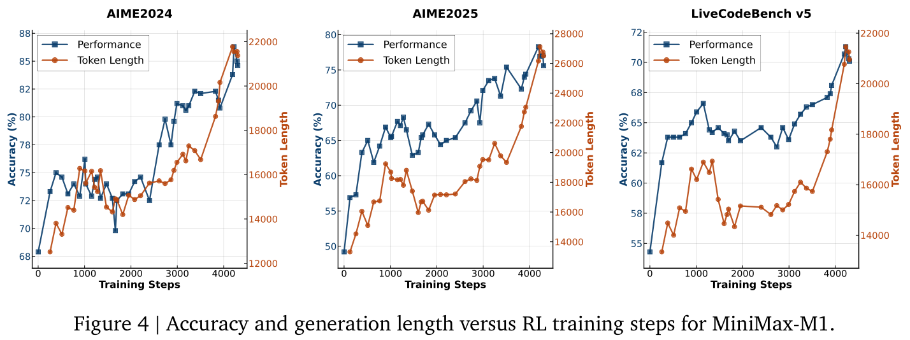
本工作介绍并发布了 MiniMax-M1，这是全球首个具有 lightning attention 机制的开放权重大规模推理模型。这种高效的 attention 设计使 MiniMax-M1 原生支持最长 1M token 的输入和 80K token 的生成长度，两者都显著超过其他开放权重模型。这些能力使 MiniMax-M1 特别适用于需要长上下文与长篇推理的复杂现实场景，它在软件工程、agent 工具使用和长上下文理解基准上的强劲表现，在实验中验证了这些特性。除 lightning attention 对 RL 训练固有的效率优势外，本工作还贡献了新的 RL 算法 CISPO，以加速训练。结合架构优势与 CISPO，我们高效训练了 MiniMax-M1，使用 512 张 H800 GPU 在三周内完成全部 RL 训练。在全面评估中，MiniMax-M1 与 DeepSeek-R1 和 Qwen3-235B 一起，位列全球最优秀的开放权重模型之列。
展望未来，随着测试时计算持续扩展，支撑越来越复杂的场景，我们预见到此类高效架构在应对现实挑战方面具有重大潜力。这些挑战包括自动化公司工作流（Xu et al., 2025）与开展科学研究（OpenAI, 2025; Si et al., 2024）。现实应用尤其需要能够作为 agent 与环境、工具、计算机或其他 agent 交互的 LRM——这要求在数十到数百轮交互中推理，同时整合不同来源的长上下文信息。我们期待 MiniMax-M1 凭借独特优势成为此类应用的强大基础，并全力致力于朝这一目标进一步发展 MiniMax-M1。
Anthropic. Claude 3.7 Sonnet 与 Claude Code。https://www.anthropic.com/news/claude-3-7-sonnet, 2025。博客文章，2025 年 2 月 24 日。
Simran Arora, Sabri Eyuboglu, Michael Zhang, Aman Timalsina, Silas Alberti, Dylan Zinsley, James Zou, Atri Rudra, and Ré. 简单线性 attention 语言模型平衡召回率与吞吐量之间的权衡。arXiv 预印本 arXiv:2402.18668, 2024。
Yushi Bai, Shangqing Tu, Jiajie Zhang, Hao Peng, Xiaozhi Wang, Xin Lv, Shulin Cao, Jiazheng Xu, Lei Hou, Yuxiao Dong, Jie Tang, and Juanzi Li. LongBench。arXiv 预印本 arXiv:2412.15204, 2024。
Ali Behrouz, Peilin Zhong, and Vahab Mirrokni. Titans：学习在测试时记忆。 arXiv 预印本 arXiv:2501.00663, 2024.
Iz Beltagy, Matthew E Peters, and Arman Cohan. Longformer：面向长文档的 transformer。 arXiv 预印本 arXiv:2004.05150, 2020.
Krzysztof Marcin Choromanski, Valerii Likhosherstov, David Dohan, Xingyou Song, Andreea Gane, Tamas Sarlos, Peter Hawkins, Jared Quincy Davis, Afroz Mohiuddin, Lukasz Kaiser, David Benjamin Belanger, Lucy J Colwell, and Adrian Weller. 借助 Performer 重新思考 attention。 载于 International Conference on Learning Representations, 2021. 链接 https://openreview.net/forum?id=Ua6zuk0WRH.
Yuhong Chou, Man Yao, Kexin Wang, Yuqi Pan, Rui-Jie Zhu, Jibin Wu, Yiran Zhong, Yu Qiao, Bo Xu, and Guoqi Li. MetaLA：softmax attention 映射的统一最优线性近似。 Advances in Neural Information Processing Systems, 37:71034–71067, 2024.
Junyoung Chung and Ç. 门控循环神经网络在序列建模中的实证评估。 arXiv 预印本 arXiv:1412.3555, 2014.
Ganqu Cui, Yuchen Zhang, Jiacheng Chen, Lifan Yuan, Zhi Wang, Yuxin Zuo, Haozhan Li, Yuchen Fan, Huayu Chen, Weize Chen, Zhiyuan Liu, Hao Peng, Lei Bai, Wanli Ouyang, Yu Cheng, Bowen Zhou, and Ning Ding. 推理语言模型强化学习中的熵机制。 arXiv 预印本 arXiv:2505.22617, 2025.
Tri Dao and Albert Gu. transformer 即 SSM：通过结构化状态空间对偶实现广义模型与高效算法。 arXiv 预印本 arXiv:2405.21060, 2024.
DeepSeek-AI, Daya Guo, Dejian Yang, Haowei Zhang, Junxiao Song, Ruoyu Zhang, Runxin Xu, Qihao Zhu, Shirong Ma, Peiyi Wang, et al. DeepSeek-R1：通过强化学习激发 LLM 的推理能力。 arXiv 预印本 arXiv:2501.12948, 2025.
Jusen Du, Weigao Sun, Disen Lan, Jiaxi Hu, and Yu Cheng. MoM：采用混合记忆的线性序列建模。 arXiv 预印本 arXiv:2502.13685, 2025.
Paolo Glorioso, Quentin Anthony, Yury Tokpanov, James Whittington, Jonathan Pilault, Adam Ibrahim, and Beren Millidge. Zamba：紧凑的 7B SSM。 arXiv 预印本 arXiv:2405.16712, 2024.
Google DeepMind. Gemini Pro。 https://deepmind.google/models/gemini/pro/, 2025. 网页，访问于 2025.
Albert Gu and Tri Dao. Mamba：使用选择性状态空间进行线性时间序列建模。 载于 First Conference on Language Modeling, 2024. 链接 https://openreview.net/forum?id=tEYskw1VY2.
Albert Gu, Tri Dao, Stefano Ermon, Atri Rudra, and Christopher Ré. HiPPO：采用最优多项式投影的循环记忆。 Advances in neural information processing systems, 33:1474–1487, 2020.
Albert Gu, Karan Goel, and Christopher Ré. 通过结构化状态空间高效建模长序列。 载于 The Tenth International Conference on Learning Representations, ICLR 2022, Virtual Event, April 25-29, 2022. OpenReview.net, 2022. 链接 https://openreview.net/forum?id=uYLFoz1vlAC.
原文链接：https://deepmind.google/models/gemini/pro/ · https://openreview.net/forum?id=Ua6zuk0WRH · https://openreview.net/forum?id=tEYskw1VY2 · https://openreview.net/forum?id=uYLFoz1vlAC
Albert Gu, Isys Johnson, Aman Timalsina, Atri Rudra, and Christopher Re. 如何训练你的 HiPPO：采用广义正交基投影的状态空间模型。 载于 International Conference on Learning Representations, 2023. 链接 https://openreview.net/forum?id=klK17OQ3KB.
Ankit Gupta, Albert Gu, and Jonathan Berant. 对角状态空间与结构化状态空间同样有效。 载于 NeurIPS, 2022. 链接 http://papers.nips.cc/paper_files/paper/2022/hash/9156b0f6dfa9bbd18c79cc459ef5d61c-Abstract-Conference.html.
Zhihao He, Hang Yu, Zi Gong, Shizhan Liu, Jianguo Li, and Weiyao Lin. Rodimus*：通过高效 attention 打破准确率与效率之间的权衡。 arXiv 预印本 arXiv:2410.06577, 2024.
Dan Hendrycks, Collin Burns, Saurav Kadavath, Akul Arora, Steven Basart, Eric Tang, Dawn Song, and Jacob Steinhardt. 使用 MATH 数据集衡量数学问题求解能力。 arXiv 预印本 arXiv:2103.03874, 2021.
Sepp Hochreiter and Jürgen Schmidhuber. 长短期记忆。 Neural computation, 9(8): 1735–1780, 1997.
Jingcheng Hu, Yinmin Zhang, Qi Han, Daxin Jiang, Xiangyu Zhang, and Heung-Yeung Shum. Open-Reasoner-Zero：在基础模型上扩展强化学习的开源方法。 arXiv 预印本 arXiv:2503.24290, 2025.
Naman Jain, King Han, Alex Gu, Wen-Ding Li, Fanjia Yan, Tianjun Zhang, Sida Wang, Armando Solar-Lezama, Koushik Sen, and Ion Stoica. LiveCodeBench：对大型语言模型代码能力进行全面且无污染的评估。 载于 The Thirteenth International Conference on Learning Representations, 2025.
Jamba Team. Jamba-1.5：混合 T。 arXiv 预印本 arXiv:2408.12570, 2024.
Carlos E. Jimenez, John Yang, Alexander Wettig, Shunyu Yao, Kexin Pei, Ofir Press, and Karthik Narasimhan. SWE-bench：语言模型能解决真实 GitHub issue 吗？ 载于 International Conference on Learning Representations, 2024. 链接 https://openreview.net/forum?id=VTF8yNQM66.
Angelos Katharopoulos, Apoorv Vyas, Nikolaos Pappas, and François Fleuret. transformer 即 RNN：采用线性 attention 的快速自回归 transformer。 载于 International Conference on Machine Learning, 页码 5156–5165. PMLR, 2020.
Kimi Team. Kimi k1.5：使用 LLM 扩展强化学习。 arXiv 预印本 arXiv:2501.12599, 2025.
Bill Yuchen Lin, Ronan Le Bras, Kyle Richardson, Ashish Sabharwal, Radha Poovendran, Peter Clark, and Yejin Choi. ZebraLogic：论 LLM 逻辑推理的扩展极限。 arXiv 预印本 arXiv:2502.01100, 2025.
Junteng Liu, Yuanxiang Fan, Zhuo Jiang, Han Ding, Yongyi Hu, Chi Zhang, Yiqi Shi, Shitong Weng, Aili Chen, Shiqi Chen, Yunan Huang, Mozhi Zhang, Pengyu Zhao, Junjie Yan, and Junxian He. SynLogic：大规模合成可验证推理数据，用于学习逻辑推理及其他能力。 arXiv 预印本 arXiv:2505.19641, 2025a.
Siyao Liu, He Zhu, Jerry Liu, Shulin Xin, Aoyan Li, Rui Long, Li Chen, Jack Yang, Jinxiang Xia, Z. Y. Peng, Shukai Liu, Zhaoxiang Zhang, Ge Zhang, Wenhao Huang, Kai Shen, and Liang Xiang. FullStack Bench：将 LLM 作为全栈程序员进行评估。 arXiv 预印本 arXiv:2412.00535, 2024.
原文链接：http://papers.nips.cc/paper_files/paper/2022/hash/9156b0f6dfa9bbd18c79cc459ef5d61c-Abstract-Conference.html · https://openreview.net/forum?id=VTF8yNQM66 · https://openreview.net/forum?id=klK17OQ3KB
Zichen Liu, Changyu Chen, Wenjun Li, Penghui Qi, Tianyu Pang, Chao Du, Wee Sun Lee, and Min Lin. 理解类 R1-Zero 训练：一个批判性视角。 arXiv 预印本 arXiv:2503.20783, 2025b.
Ilya Loshchilov and Frank Hutter. 解耦权重衰减正则化。 载于 International Conference on Learning Representations, 2019.
Enzhe Lu, Zhejun Jiang, Jingyuan Liu, Yulun Du, Tao Jiang, Chao Hong, Shaowei Liu, Weiran He, Enming Yuan, Yuzhi Wang, et al. MoBA：面向长上下文 LLM 的混合块 attention。 arXiv 预印本 arXiv:2502.13189, 2025.
Eric Martin and Chris Cundy. 沿序列长度并行化线性循环神经网络。 载于 6th International Conference on Learning Representations, ICLR 2018, Vancouver, BC, Canada, April 30 - May 3, 2018, Conference Track Proceedings. OpenReview.net, 2018. 链接 https://openreview.net/forum?id=HyUNwulC-.
MiniMax, Aonian Li, Bangwei Gong, Bo Yang, Boji Shan, Chang Liu, Cheng Zhu, Chunhao Zhang, Congchao Guo, Da Chen, Dong Li, et al. MiniMax-01：通过 lightning attention 扩展基础模型。 arXiv 预印本 arXiv:2501.08313, 2025.
Igor Molybog, Peter Albert, Moya Chen, Zachary DeVito, David Esiobu, Naman Goyal, Punit Singh Koura, Sharan Narang, Andrew Poulton, Ruan Silva, Binh Tang, Diana Liskovich, Puxin Xu, Yuchen Zhang, Melanie Kambadur, Stephen Roller, and Susan Zhang. 关于大规模机器学习中 Adam 不稳定性的理论。 arXiv 预印本 arXiv:2304.09871, 2023.
OpenAI. 介绍 OpenAI o1。 https://openai.com/o1/, 2024a. 网页，访问于 2024.
OpenAI. OpenAI MRCR 数据集。 https://huggingface.co/datasets/openai/mrcr, 2024b. 访问日期： 2025-06-15.
OpenAI. 介绍 deep research， 2025. 链接 https://openai.com/index/introducing-deep-research/.
Bo Peng, Eric Alcaide, Quentin Gregory Anthony, Alon Albalak, Samuel Arcadinho, Stella Biderman, Huanqi Cao, Xin Cheng, Michael Nguyen Chung, Leon Derczynski, et al. RWKV：为 transformer 时代重新设计 RNN。 载于 Proceedings of the Conference on Empirical Methods in Natural Language Processing (EMNLP), 2023.
Bo Peng, Daniel Goldstein, Quentin Anthony, Alon Albalak, Eric Alcaide, Stella Biderman, Eugene Cheah, Teddy Ferdinan, Haowen Hou, and Przemysł Kazienko. Eagle 与 Finch：具有矩阵值状态和动态递归的 RWKV。 arXiv 预印本 arXiv:2404.05892, 2024a.
Bo Peng, Daniel Goldstein, Quentin Anthony, Alon Albalak, Eric Alcaide, Stella Biderman, Eugene Cheah, Teddy Ferdinan, Haowen Hou, and Przemysł Kazienko. Eagle 与 Finch：具有矩阵值状态和动态递归的 RWKV。 arXiv 预印本 arXiv:2404.05892, 2024b.
Bo Peng, Ruichong Zhang, Daniel Goldstein, Eric Alcaide, Xingjian Du, Haowen Hou, Jiaju Lin, Jiaxing Liu, Janna Lu, William Merrill, et al. RWKV-7。 arXiv 预印本 arXiv:2503.14456, 2025.
Hao Peng, Nikolaos Pappas, Dani Yogatama, Roy Schwartz, Noah Smith, and Lingpeng Kong. 随机特征 attention。 载于 International Conference on Learning Representations, 2021. 链接 https://openreview.net/forum?id=QtTKTdVrFBB.
原文链接：https://huggingface.co/datasets/openai/mrcr · https://openai.com/index/introducing-deep-research/ · https://openreview.net/forum?id=HyUNwulC- · https://openreview.net/forum?id=QtTKTdVrFBB
Long Phan, Alice Gatti, Ziwen Han, Nathaniel Li, Josephina Hu, Hugh Zhang, Chen Bo Calvin Zhang, Mohamed Shaaban, John Ling, Sean Shi, et al. 人类最后的考试。 arXiv 预印本 arXiv:2501.14249, 2025.
Zhen Qin, Weixuan Sun, Hui Deng, Dongxu Li, Yunshen Wei, Baohong Lv, Junjie Yan, Lingpeng Kong, and Yiran Zhong. cosFormer：重新思考 attention 中的 softmax。 载于 Proceedings of the International Conference on Learning Representations (ICLR), 2021.
Zhen Qin, Xiaodong Han, Weixuan Sun, Dongxu Li, Lingpeng Kong, Nick Barnes, and Yiran Zhong. 线性 transformer 中的魔鬼。 载于 Proceedings of the 2022 Conference on Empirical Methods in Natural Language Processing, 页码 7025–7041, 2022a.
Zhen Qin, Weixuan Sun, Hui Deng, Dongxu Li, Yunshen Wei, Baohong Lv, Junjie Yan, Lingpeng Kong, and Yiran Zhong. cosFormer：重新思考 attention 中的 softmax。 载于 International Conference on Learning Representations, 2022b. 链接 https://openreview.net/forum?id=Bl8CQrx2Up4.
Zhen Qin, Songlin Yang, and Yiran Zhong. 用于序列建模的分层门控循环神经网络。 载于 Proceedings of the 37th International Conference on Neural Information Processing Systems, 页码 33202–33221, 2023.
Zhen Qin, Yuxin Mao, Xuyang Shen, Dong Li, Jing Zhang, Yuchao Dai, and Yiran Zhong. 只需扫描一次：使用 LightNet 高效进行多维序列建模。 arXiv 预印本 arXiv:2405.21022, 2024a.
Zhen Qin, Weigao Sun, Dong Li, Xuyang Shen, Weixuan Sun, and Yiran Zhong. Lightning Attention-2：大型语言模型处理无限序列长度的免费午餐。 arXiv 预印本 arXiv:2401.04658, 2024b.
Zhen Qin, Weigao Sun, Dong Li, Xuyang Shen, Weixuan Sun, and Yiran Zhong. 长度可变、速度不变：使用 lightning attention 高效进行语言建模。 载于 International conference on machine learning, 页码 41517–41535. PMLR, 2024c.
Zhen Qin, Songlin Yang, Weixuan Sun, Xuyang Shen, Dong Li, Weigao Sun, and Yiran Zhong. HGRN2。 arXiv 预印本 arXiv:2404.07904, 2024d.
Qwen, :, An Yang, Baosong Yang, Beichen Zhang, Binyuan Hui, Bo Zheng, Bowen Yu, Chengyuan Li, Dayiheng Liu, Fei Huang, Haoran Wei, Huan Lin, Jian Yang, Jianhong Tu, Jianwei Zhang, Jianxin Yang, Jiaxi Yang, Jingren Zhou, Junyang Lin, Kai Dang, Keming Lu, Keqin Bao, Kexin Yang, Le Yu, Mei Li, Mingfeng Xue, Pei Zhang, Qin Zhu, Rui Men, Runji Lin, Tianhao Li, Tianyi Tang, Tingyu Xia, Xingzhang Ren, Xuancheng Ren, Yang Fan, Yang Su, Yichang Zhang, Yu Wan, Yuqiong Liu, Zeyu Cui, Zhenru Zhang, and Zihan Qiu. Qwen2.5 技术报告。 arXiv 预印本 arXiv:2412.15115, 2025.
David Rein, Betty Li Hou, Asa Cooper Stickland, Jackson Petty, Richard Yuanzhe Pang, Julien Dirani, Julian Michael, and Samuel R Bowman. GPQA：研究生级、无法靠 Google 搜索解决的问答基准。 载于 First Conference on Language Modeling, 2024.
Liliang Ren, Yang Liu, Yadong Lu, Yelong Shen, Chen Liang, and Weizhu Chen. Samba：用于高效无限上下文语言建模的简单混合状态空间模型。 arXiv 预印本 arXiv:2406.07522, 2024.
John Schulman, Filip Wolski, Prafulla Dhariwal, Alec Radford, and Oleg Klimov. 近端策略优化算法。 arXiv 预印本 arXiv:1707.06347, 2017.
ByteDance Seed, Jiaze Chen, Tiantian Fan, Xin Liu, Lingjun Liu, Zhiqi Lin, Mingxuan Wang, Chengyi Wang, Xiangpeng Wei, Wenyuan Xu, et al. Seed1.5-Thinking：通过强化学习推进卓越推理模型。 arXiv 预印本 arXiv:2504.13914, 2025.
Zhihong Shao, Peiyi Wang, Qihao Zhu, Runxin Xu, Junxiao Song, Xiao Bi, Haowei Zhang, Mingchuan Zhang, YK Li, Y Wu, et al. DeepSeekMath。 arXiv 预印本 arXiv:2402.03300, 2024.
Xuyang Shen, Dong Li, Ruitao Leng, Zhen Qin, Weigao Sun, and Yiran Zhong. 线性复杂度语言模型的 scaling laws。 载于 Proceedings of the 2024 Conference on Empirical Methods in Natural Language Processing, 页码 16377–16426, 2024.
Guangming Sheng, Chi Zhang, Zilingfeng Ye, Xibin Wu, Wang Zhang, Ru Zhang, Yanghua Peng, Haibin Lin, and Chuan Wu. HybridFlow：灵活高效的 RLHF 框架。 arXiv 预印本 arXiv:2409.19256, 2024.
Chenglei Si, Diyi Yang, and Tatsunori Hashimoto. LLM 能生成新颖的研究想法吗？一项涉及 100 多位 NLP 研究者的大规模人类研究。 arXiv 预印本 arXiv:2409.04109, 2024.
Julien Siems, Timur Carstensen, Arber Zela, Frank Hutter, Massimiliano Pontil, and Riccardo Grazzi. DeltaProduct：通过 Householder 乘积改进线性 RNN 中的状态跟踪。 arXiv 预印本 arXiv:2502.10297, 2025.
Ved Sirdeshmukh, Kaustubh Deshpande, Johannes Mols, Lifeng Jin, Ed-Yeremai Cardona, Dean Lee, Jeremy Kritz, Willow Primack, Summer Yue, and Chen Xing. MultiChallenge：对前沿 LLM 具有挑战性的真实多轮对话评估基准。 arXiv 预印本 arXiv:2501.17399, 2025.
Weigao Sun, Disen Lan, Tong Zhu, Xiaoye Qu, and Yu Cheng. Linear-MoE：线性序列建模与混合专家相结合。 arXiv 预印本 arXiv:2503.05447, 2025.
Yu Sun, Xinhao Li, Karan Dalal, Jiarui Xu, Arjun Vikram, Genghan Zhang, Yann Dubois, Xinlei Chen, Xiaolong Wang, Sanmi Koyejo, et al. 学习（在测试时学习）：具有表达力强的隐藏状态的 RNN。 arXiv 预印本 arXiv:2407.04620, 2024.
Yutao Sun, Li Dong, Shaohan Huang, Shuming Ma, Yuqing Xia, Jilong Xue, Jianyong Wang, and Furu Wei. Retentive Network：用于大型语言模型的 transformer 继任者。 arXiv 预印本 arXiv:2307.08621, 2023.
Tencent AI Lab. Hunyuan-T1：重新定义推理效率。 https://llm.hunyuan.tencent.com/#/Blog/hy-t1/, 2025. 访问日期： 2025-06-15.
Ashish Vaswani, Noam Shazeer, Niki Parmar, Jakob Uszkoreit, Llion Jones, Aidan N Gomez, Łukasz Kaiser, and Illia Polosukhin. Attention 即你所需的一切。 Advances in neural information processing systems, 30, 2017.
Johannes von Oswald, Nino Scherrer, Seijin Kobayashi, Luca Versari, Songlin Yang, Maximilian Schlegel, Kaitlin Maile, Yanick Schimpf, Oliver Sieberling, Alexander Meulemans, et al. MesaNet：通过局部最优的 test-time training 进行序列建模。 arXiv 预印本 arXiv:2506.05233, 2025.
Shenzhi Wang, Le Yu, Chang Gao, Chujie Zheng, Shixuan Liu, Rui Lu, Kai Dang, Xionghui Chen, Jianxin Yang, Zhenru Zhang, Yuqiong Liu, An Yang, Andrew Zhao, Yang Yue, Shiji Song, Bowen Yu, Gao Huang, and Junyang Lin. 超越 80/20 法则：高熵少数 token 推动 LLM 推理的有效强化学习。 arXiv 预印本 arXiv:2506.01939, 2025.
Yubo Wang, Xueguang Ma, Ge Zhang, Yuansheng Ni, Abhranil Chandra, Shiguang Guo, Weiming Ren, Aaran Arulraj, Xuan He, Ziyan Jiang, et al. MMLU-Pro：更稳健、更具挑战性的多任务语言理解基准。 载于 The Thirty-eight Conference on Neural Information Processing Systems Datasets and Benchmarks Track, 2024.
Jason Wei, Xuezhi Wang, Dale Schuurmans, Maarten Bosma, Fei Xia, Ed Chi, Quoc V Le, Denny Zhou, et al. CoT 提示激发大型语言模型的推理能力。 Advances in neural information processing systems, 35:24824–24837, 2022.
Jason Wei, Nguyen Karina, Hyung Won Chung, Yunxin Joy Jiao, Spencer Papay, Amelia Glaese, John Schulman, and William Fedus. 衡量大型语言模型的短回答事实性。 arXiv 预印本 arXiv:2411.04368, 2024.
Chunqiu Steven Xia, Yinlin Deng, Soren Dunn, and Lingming Zhang. Agentless：揭开基于 LLM 的软件工程 agent 的神秘面纱。 arXiv 预印本 arXiv:2407.01489, 2024.
Frank F. Xu, Yufan Song, Boxuan Li, Yuxuan Tang, Kritanjali Jain, Mengxue Bao, Zora Z. Wang, Xuhui Zhou, Zhitong Guo, Murong Cao, Mingyang Yang, Hao Yang Lu, Amaad Martin, Zhe Su, Leander Maben, Raj Mehta, Wayne Chi, Lawrence Jang, Yiqing Xie, Shuyan Zhou, and Graham Neubig. TheAgentCompany：在具有实际影响的现实任务上评测 LLM agent。 arXiv 预印本 arXiv:2412.14161, 2025.
Songlin Yang, Bailin Wang, Yikang Shen, Rameswar Panda, and Yoon Kim. 具有硬件高效训练的 gated linear attention transformer。 arXiv 预印本 arXiv:2312.06635, 2024a.
Songlin Yang, Bailin Wang, Yu Zhang, Yikang Shen, and Yoon Kim. 通过 delta rule 沿序列长度并行化线性 transformer。 arXiv 预印本 arXiv:2406.06484, 2024b.
Shunyu Yao, Noah Shinn, Pedram Razavi, and Karthik R Narasimhan. τ-bench：真实领域中工具、agent 与用户交互的基准。 载于 The Thirteenth International Conference on Learning Representations, 2025.
Qiying Yu, Zheng Zhang, Ruofei Zhu, Yufeng Yuan, Xiaochen Zuo, Yu Yue, Weinan Dai, Tiantian Fan, Gaohong Liu, Lingjun Liu, Xin Liu, Haibin Lin, Zhiqi Lin, Bole Ma, Guangming Sheng, Yuxuan Tong, Chi Zhang, Mofan Zhang, Wang Zhang, Hang Zhu, Jinhua Zhu, Jiaze Chen, Jiangjie Chen, Chengyi Wang, Hongli Yu, Yuxuan Song, Xiangpeng Wei, Hao Zhou, Jingjing Liu, Wei-Ying Ma, Ya-Qin Zhang, Lin Yan, Mu Qiao, Yonghui Wu, and Mingxuan Wang. DAPO：大规模开源 LLM 强化学习系统。 arXiv 预印本 arXiv:2503.14476, 2025.
Jingyang Yuan, Huazuo Gao, Damai Dai, Junyu Luo, Liang Zhao, Zhengyan Zhang, Zhenda Xie, YX Wei, Lean Wang, Zhiping Xiao, et al. Native Sparse Attention：与硬件匹配且原生可训练的稀疏 attention。 arXiv 预印本 arXiv:2502.11089, 2025.
Manzil Zaheer, Guru Guruganesh, Kumar Avinava Dubey, Joshua Ainslie, Chris Alberti, Santiago Ontanon, Philip Pham, Anirudh Ravula, Qifan Wang, Li Yang, et al. Big Bird：用于更长序列的 transformer。 Advances in neural information processing systems, 33:17283–17297, 2020.
Weihao Zeng, Yuzhen Huang, Qian Liu, Wei Liu, Keqing He, Zejun Ma, and Junxian He. SimpleRL-Zoo：研究并驾驭真实开放基础模型的 zero 强化学习。 arXiv 预印本 arXiv:2503.18892, 2025.
Yu Zhang, Songlin Yang, Rui-Jie Zhu, Yue Zhang, Leyang Cui, Yiqiao Wang, Bolun Wang, Freda Shi, Bailin Wang, Wei Bi, et al. 用于高效线性时间序列建模的 gated slot attention。 Advances in Neural Information Processing Systems, 37:116870–116898, 2024.
本报告的贡献者按字母顺序列示如下：
Aili Chen, Aonian Li, Bangwei Gong, Binyang Jiang, Bo Fei, Bo Yang, Boji Shan, Changqing Yu, Chao Wang, Cheng Zhu, Chengjun Xiao, Chengyu Du, Chi Zhang, Chu Qiao, Chunhao Zhang, Chunhui Du, Congchao Guo, Da Chen, Deming Ding, Dianjun Sun, Dong Li, Enwei Jiao, Haigang Zhou, Haimo Zhang, Han Ding, Haohai Sun, Haoyu Feng, Huaiguang Cai, Haichao Zhu, Jian Sun, Jiaqi Zhuang, Jiaren Cai, Jiayuan Song, Jin Zhu, Jingyang Li, Jinhao Tian, Jinli Liu, Junhao Xu, Junjie Yan, Junteng Liu, Junxian He, Kaiyi Feng, Ke Yang, Kecheng Xiao, Le Han, Leyang Wang, Lianfei Yu, Liheng Feng, Lin Li, Lin Zheng, Linge Du, Lingyu Yang, Lunbin Zeng, Minghui Yu, Mingliang Tao, Mingyuan Chi, Mozhi Zhang, Mujie Lin, Nan Hu, Nongyu Di, Peng Gao, Pengfei Li, Pengyu Zhao, Qibing Ren, Qidi Xu, Qile Li, Qin Wang, Rong Tian, Ruitao Leng, Shaoxiang Chen, Shaoyu Chen, Shengmin Shi, Shitong Weng, Shuchang Guan, Shuqi Yu, Sichen Li, Songquan Zhu, Tengfei Li, Tianchi Cai, Tianrun Liang, Weiyu Cheng, Weize Kong, Wenkai Li, Xiancai Chen, Xiangjun Song, Xiao Luo, Xiao Su, Xiaobo Li, Xiaodong Han, Xinzhu Hou, Xuan Lu, Xun Zou, Xuyang Shen, Yan Gong, Yan Ma, Yang Wang, Yiqi Shi, Yiran Zhong, Yonghong Duan, Yongxiang Fu, Yongyi Hu, Yu Gao, Yuanxiang Fan, Yufeng Yang, Yuhao Li, Yulin Hu, Yunan Huang, Yunji Li, Yunzhi Xu, Yuxin Mao, Yuxuan Shi, Yuze Wenren, Zehan Li, Zelin Li, Zhanxu Tian, Zhengmao Zhu, Zhenhua Fan, Zhenzhen Wu, Zhichao Xu, Zhihang Yu, Zhiheng Lyu, Zhuo Jiang, Zibo Gao, Zijia Wu, Zijian Song, Zijun Sun